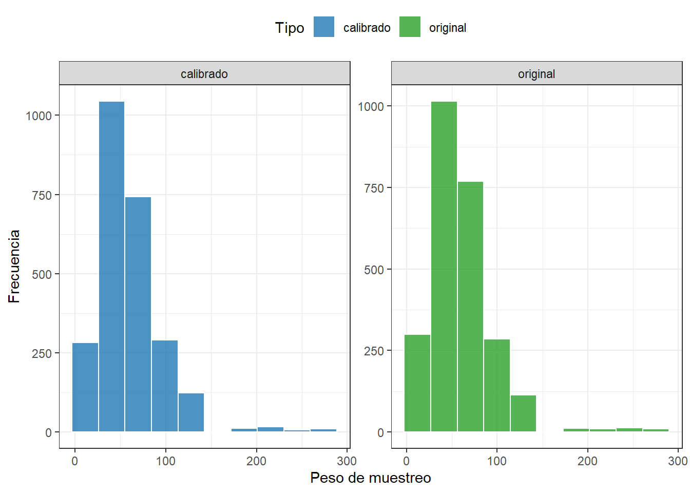
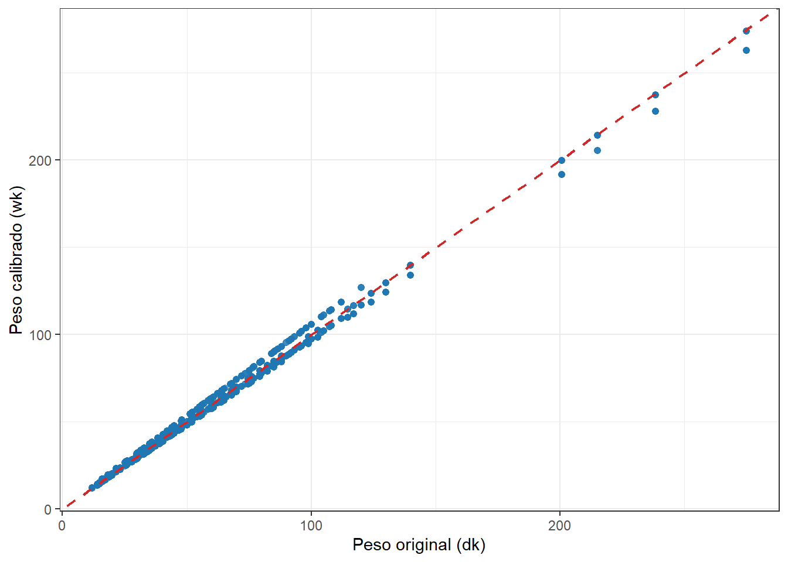

Capítulo 2 Conceptos básicos en encuestas de hogares
El análisis riguroso de encuestas de hogares es una herramienta fundamental para comprender la realidad social, económica y demográfica de una población. Sin embargo, la validez de los resultados que se derivan de una encuesta no depende únicamente del tamaño de la muestra o de la calidad de la recolección de datos, sino del modo en que fue diseñada y de la forma en que ese diseño se incorpora en el análisis estadístico.
Las encuestas de hogares son una de las principales herramientas para comprender la realidad social y económica de una población. A partir de ellas se obtiene información esencial sobre condiciones de vida, empleo, educación, salud y otros aspectos que orientan la formulación de políticas públicas y la toma de decisiones basadas en la evidencia proporcionada por los datos.
En la práctica, las encuestas de hogares suelen utilizar diseños complejos, que combinan la estratificación y varias etapas para la selección de los informantes. Este tipo de diseños busca optimizar recursos y mejorar la precisión de las estimaciones, lo que induce probabilidades de inclusión desiguales. Ignorar estos aspectos puede conducir a estimaciones sesgadas, errores estándar incorrectos y conclusiones erradas.
Como señalan Särndal et al. (2003) y Gutiérrez (2016), toda encuesta parte de tres conceptos fundamentales, la población objetivo, y el marco muestral, que sirven de base para el diseño de la encuesta y la selección de la muestra. Estos elementos son esenciales para garantizar la validez de las inferencias y la representatividad de los resultados.
En este contexto, un aspecto crucial es la consideración del diseño muestral. Para obtener conclusiones válidas sobre la población, es necesario adoptar un enfoque de inferencia basada en el diseño, el cual reconoce que la muestra no surge de una selección aleatoria simple, sino de un plan probabilístico bien definido. En dicho plan, cada unidad de la población tiene una probabilidad conocida y distinta de cero de ser incluida en la muestra, lo que constituye la garantía fundamental de que los resultados puedan generalizarse a la población de referencia.
Bajo este enfoque, es posible demostrar que las estimaciones son insesgadas (o prácticamente insesgadas) en relación con el esquema de muestreo, sin depender de supuestos sobre la distribución de la variable de interés. Esto otorga a la inferencia basada en el diseño un carácter robusto y ampliamente aceptado en el análisis de encuestas de hogares.
Un elemento central de este proceso son los pesos de muestreo, que indican cuántas unidades de la población está representando cada unidad seleccionada. Dichos pesos permiten ajustar las estimaciones a las particularidades del diseño, de modo que los resultados reflejen con fidelidad la estructura poblacional. Además, un diseño bien documentado facilita el análisis estadístico, respalda la interpretación rigurosa de los datos y posibilita obtener conclusiones sobre fenómenos complejos.
En contraste, ignorar el diseño muestral y aplicar métodos de análisis que asumen una muestra aleatoria simple puede llevar a estimaciones sesgadas, errores de inferencia y conclusiones equivocadas. Por ello, el análisis de encuestas de hogares no puede desligarse de su diseño de selección: este no es un detalle técnico accesorio, sino el núcleo mismo que sustenta la validez de la información producida.
2.1 Universo de estudio y población objetivo
El término encuesta se encuentra directamente relacionado con una población finita compuesta de individuos a los cuales es necesario entrevistar. El universo de estudio lo constituye el total de individuos o elementos que poseen dichas características a ser estudiadas. Ahora bien, conjunto de unidades de interés sobre los cuales se tendrán resultados recibe el nombre de población objetivo. Por ejemplo, la Encuesta Nacional de Empleo y Desempleo de Ecuador define su población objetivo como todas las personas mayores de 10 años residentes en viviendas particulares en Ecuador.
2.2 Unidades de análisis
Corresponden a los diferentes niveles de desagregación establecidos para consolidar el diseño probabilístico y sobre los que se presentan los resultados de interés. En México, la Encuesta Nacional de Ingresos y Gastos de los Hogares define como unidades de análisis el ámbito al que pertenece la vivienda, urbano alto, complemento urbano y rural. La Gran Encuesta Integrada de Hogares de Colombia tiene cobertura nacional y sus unidades de análisis están definidas por 13 grandes ciudades junto con sus áreas metropolitanas.
2.3 Unidades de muestreo
El diseño de una encuesta de hogares en América Latina plantea la necesidad de seleccionar en varias etapas ciertas unidades de muestreo que sirven como medio para seleccionar finalmente a los hogares que participarán de la muestra. La Pesquisa Nacional por Amostra de Domicilios (PNAD) en Brasil se realiza por medio de una muestra de viviendas en tres etapas, cada etapa se define como una unidad de muestreo. Por ejemplo, las unidades de muestreo en PNAD son:
- Las unidades primarias de muestreo (UPM) son los municipios,
- Las unidades secundarias de muestreo (USM) son los sectores censales, que conforman una malla territorial conformada en el último Censo Demográfico.
- Las últimas unidades en ser seleccionadas son las viviendas.
2.4 Marcos de muestreo
Para realizar un proceso de selección sistemática de hogares es indispensable disponer de un marco muestral que actúe como enlace entre las unidades de muestreo y los hogares que conforman la población objetivo. Dicho marco constituye el conjunto en el cual se identifican a todos los elementos que componen la población objeto de estudio, y a partir del cual se extrae la muestra.
En las encuestas de hogares con diseños muestrales complejos, los marcos de muestreo suelen ser de áreas geográficas, es decir, estructuras espaciales que vinculan directamente a los hogares o personas con zonas delimitadas que los contienen. Este tipo de marco facilita la organización del territorio en unidades más manejables y permite una selección por etapas, manteniendo los principios del muestreo probabilístico.
Un ejemplo ilustrativo es la Encuesta Nacional de Hogares de Costa Rica, que utiliza un marco muestral elaborado a partir del Censo Nacional de Población y Vivienda de 2011. Este marco corresponde a un marco de áreas, en el que las unidades de muestreo son superficies geográficas asociadas con las viviendas. Este marco permite la definición de UPM con 150 viviendas en las zonas urbanas y 100 viviendas en las zonas rurales. Sobre esta base, se definen las unidades primarias de muestreo (UPM), conformadas por 10.461 UPM, de las cuales el 64,5% son urbanas y el 35,5% son rurales.
2.5 Motivación
Desde que se popularizaron las encuestas de hogares en 1940, se han hecho evidentes algunas tendencias vinculadas a los avances tecnológicos tanto en las agencias estadísticas como en la sociedad, las cuales se han acelerado con la introducción del computador. Gambino & Nascimento Silva (2009)
El muestreo surge como respuesta a la necesidad de obtener información estadística precisa sobre una población objetivo, sin recurrir a un censo completo. Como señala Gutiérrez (2016), el muestreo consiste en investigaciones parciales sobre la población que permiten inferir resultados al conjunto total. En las últimas décadas, esta metodología se ha consolidado en distintos campos —especialmente en el sector gubernamental, con la producción de estadísticas oficiales que facilitan el seguimiento de políticas públicas y de los Objetivos de Desarrollo Sostenible—, pero también en el ámbito académico, privado y de comunicaciones.
En el marco de este libro, el foco se centra en el análisis de encuestas de hogares. Para que el lector disponga de ejemplos prácticos, en este capítulo se empleará la base de datos BigCity, que contiene información socioeconómica de 150.266 personas de una ciudad en un año específico. Entre sus variables se encuentran:
- HHID: Identificador del hogar.
- PersonID: Identificador de la persona dentro del hogar.
- Stratum: Estrato geográfico (119 en total).
- PSU: Unidades primarias de muestreo (1664 en total).
- Zone: Zona urbana o rural.
- Sex: Sexo del entrevistado.
- Income: Ingreso mensual per cápita.
- Expenditure: Gasto mensual per cápita.
- Employment: Situación laboral.
- Poverty: Condición de pobreza según ingresos.
2.5.1 La importancia de considerar el diseño muestral
Al analizar datos provenientes de encuestas de hogares, ignorar el diseño muestral compromete la representatividad, la precisión y la validez de los resultados. Este descuido puede traducirse en inferencias sesgadas y en decisiones basadas en conclusiones erróneas.
Como lo muestran Korn & Graubard (1995), las estimaciones ponderadas y no ponderadas pueden diferir sustancialmente, lo que evidencia la importancia de aplicar siempre métodos consistentes con el diseño de la encuesta. Así que, considerar adecuadamente los pesos, la estratificación y las unidades de muestreo no es una opción técnica secundaria, sino un requisito fundamental para garantizar la credibilidad y validez de los resultados.
Como se mencionó, las encuestas de hogares se caracterizan por:
- Diseños de muestreo complejos (estratificación, conglomeración y probabilidades desiguales de selección), que buscan mejorar la eficiencia y la precisión.
- Pesos de muestreo para cada unidad, que permiten representar adecuadamente a la población.
2.5.1.1 Ejemplo ilustrativo
Suponga un país con dos regiones: la Región A (100 habitantes, ingreso promedio de $10.000) y la Región B (900 habitantes, ingreso promedio de $2.000). El ingreso promedio verdadero es:
\[ \theta = \frac{(100 \times 10.000) + (900 \times 2.000)}{100 + 900} = 2.800 \]
Si se encuesta a 50 personas en cada región y se ignora el diseño de muestreo, asignando el mismo peso a todas las observaciones, se obtiene:
\[ \hat{\theta} = \frac{(50 \times 10.000) + (50 \times 2.000)}{100} = 6.000 \]
El sesgo es evidente: se sobreestima el ingreso nacional, pues la Región A (10% de la población) influye tanto como la Región B (90%).
En cambio, si se aplican pesos proporcionales al tamaño poblacional (2 para la Región A y 18 para la Región B), la estimación corregida es:
\[ \hat{\theta} = \frac{(2 \times 50 \times 10.000) + (18 \times 50 \times 2.000)}{(2 \times 50) + (18 \times 50)} = 2.800 \]
Lo que reproduce el valor verdadero y elimina el sesgo.
2.5.1.2 Conglomeración y precisión
Otra característica crítica es la conglomeración. La mayoría de encuestas selecciona unidades primarias de muestreo (UPM) como sectores censales o áreas de enumeración, y dentro de ellas, submuestras de hogares. Este diseño reduce costos, pero afecta la precisión: si los hogares dentro de un conglomerado son muy similares, la información adicional que aporta cada uno disminuye.
Por ejemplo, suponga que una encuesta selecciona 100 conglomerados y, dentro de cada uno, 10 hogares, obteniendo así una muestra total de 1.000 hogares. Si todos los hogares dentro de un mismo conglomerado comparten una característica común —por ejemplo, el acceso a electricidad—, la información adicional aportada por los hogares del mismo conglomerado es mínima. En la práctica, la muestra ofrecería una precisión equivalente a la de una muestra aleatoria simple de solo 100 hogares.
Analizar estos 1.000 hogares como si fueran observaciones independientes, ignorando la estructura por conglomerados, conduce a una subestimación sustancial de los errores estándar, generando intervalos de confianza excesivamente estrechos y conclusiones potencialmente erróneas sobre la significancia estadística de los resultados.
2.5.1.3 Recomendaciones prácticas
Para un análisis adecuado es indispensable que las bases de datos de encuestas incluyan:
- Identificadores de estratos y de las unidades del muestreo.
- Pesos de muestreo a nivel de hogar o persona.
Cuando no se dispone de esta información, se recomienda que al menos se proporcionen pesos replicados, junto con instrucciones claras para calcular estimaciones y errores estándar.
2.6 Parámetros y estimadores
Al analizar datos de encuestas, el primer paso es definir el parámetro de interés, un valor numérico fijo que describe una característica de toda la población (\(U\)). Ejemplos comunes incluyen el total y la media de la población. Dado que no es práctico observar a toda la población, se utilizan encuestas por muestreo para inferir estos parámetros a partir de una muestra (\(s\)).
El enfoque de inferencia y estimación basado en el diseño se basa en la estructura de probabilidad del plan de muestreo. Las propiedades estadísticas de los estimadores, como la precisión y el sesgo, se evalúan en relación con la distribución de aleatorización que el diseño de muestreo genera.
En el muestreo probabilístico, cada unidad de la población tiene una probabilidad de inclusión conocida y mayor que cero de ser incluidas en la muestra. Estas probabilidades son la base para el cálculo de los pesos básicos de muestreo, que a su vez se utilizan para estimar los parámetros poblacionales a través de sumas ponderadas de los datos de la encuesta. Cuando se aplican correctamente, las estimaciones son insesgadas, lo que significa que en promedio coinciden con el valor real de la población si la encuesta se repitiera bajo las mismas condiciones.
2.6.1 Ajustes adicionales de los pesos
A pesar de lo anterior, los pesos básicos de muestreo suelen necesitar ajustes adicionales para mejorar la precisión y robustez de las estimaciones. Los ajustes más comunes son:
- Ajuste por no respuesta: Los pesos de las unidades que sí respondieron se incrementan para representar también a las unidades seleccionadas que no participaron, lo cual ayuda a reducir el sesgo y a aumentar la fiabilidad de los resultados.
- Calibración: Los pesos se modifican para asegurar que las sumas ponderadas de algunas variables de control (como edad o sexo, obtenidas de censos o proyecciones demográficas) coincidan con los totales poblacionales conocidos. La calibración es una herramienta útil para identificar problemas de cobertura o no respuesta y reforzar la validez de las estimaciones.
2.6.2 Importancia de los ajustes
Los ajustes de los pesos, y en particular la calibración, desempeñan un papel fundamental en el análisis de encuestas con diseños complejos. Estos procedimientos no solo corrigen las imperfecciones derivadas de la no respuesta o la cobertura incompleta, sino que también fortalecen la coherencia entre la muestra y la población objetivo, garantizando que las inferencias sean estadísticamente válidas y comparables con otras fuentes oficiales (Kalton & Flores-Cervantes, 2003).
La calibración es especialmente relevante porque permite confrontar las estimaciones iniciales de la encuesta con valores de referencia externos, generalmente obtenidos de censos, registros administrativos o proyecciones demográficas. Esta comparación constituye una herramienta poderosa para detectar inconsistencias en la composición de la muestra, identificar sesgos potenciales asociados a la no respuesta y evaluar la calidad del trabajo de campo.
Además, los pesos calibrados tienden a reducir la varianza de las estimaciones, mejorando su precisión sin alterar los totales poblacionales conocidos (Särndal & Lundström, 2005). En consecuencia, la calibración no solo corrige, sino que también optimiza el uso de la información disponible, permitiendo obtener resultados más precisos.
En resumen, aplicar y revisar cuidadosamente estos ajustes constituye un paso esencial en cualquier análisis riguroso de encuestas, ya que esto refuerza la validez de los resultados finales.
2.7 Estimación de totales
La estimación de totales en encuestas constituye un paso central en el análisis estadístico aplicado a poblaciones finitas. Gran parte de los indicadores de interés para la formulación de políticas públicas, como el número de personas en situación de pobreza, el total de ocupados o el gasto agregado de los hogares, se derivan de un total poblacional. Por esta razón, comprender cómo se definen y estiman los totales resulta fundamental para garantizar la calidad y pertinencia de la información producida.
En términos formales, si \(y_k\) denota el valor de una variable de interés para la unidad \(k \in U\), el total poblacional se define como
\[ Y = \sum_{U} y_k, \]
y su media poblacional como
\[ \bar{Y} = \frac{Y}{N}. \]
Dado que en la práctica solo se observa una muestra \(s \subset U\), es necesario recurrir a estimadores que incorporen el diseño de muestreo. El estimador de Horvitz–Thompson (HT) es el más utilizado bajo el enfoque de diseño y se expresa como
\[ \hat{Y}_{HT} = \sum_{s} d_k y_k, \qquad \bar{y}_{HT} = \frac{\hat{Y}_{HT}}{\hat{N}_{HT}}, \quad \hat{N}_{HT} = \sum_{s} d_k, \]
donde \(d_k = 1/\pi_k\) son los pesos básicos de diseño y \(\pi_k = \Pr(k \in s)\) son las probabilidades de inclusión de primer orden.
En la práctica, los pesos de diseño suelen modificarse para reflejar procesos adicionales como el ajuste por no respuesta o la calibración a totales poblacionales conocidos, obteniendo así los pesos ajustados \(w_k\). El reemplazo de \(d_k\) por \(w_k\) permite mejorar la precisión y reducir sesgos en las estimaciones, especialmente cuando existen fuentes auxiliares de información confiables.
No obstante, toda estimación a partir de una muestra conlleva incertidumbre. Incluso cuando el estimador es insesgado, los resultados varían de una muestra a otra debido a la propiedad de aleatoriedad del diseño. Esta variabilidad se cuantifica mediante la varianza del estimador bajo el diseño muestral, con la cual se puede calcular el error estándar (\(se\)) o el coeficiente de variación (\(cv\)). Estos indicadores son herramientas indispensables para evaluar la precisión de los totales estimados y, por tanto, para interpretar de manera adecuada la información estadística.
Bajo el enfoque de diseño, la varianza insesgada del estimador de Horvitz–Thompson puede expresarse como:
\[ \hat{V}_p(\hat{Y}_{HT}) = \sum_{k \in s} \sum_{l \in s} \bigl( d_k d_l - d_{kl} \bigr) y_k y_l, \]
donde \(d_{kl} = 1/\pi_{kl}\) y \(\pi_{kl} = \Pr(k,l \in s)\) representan las probabilidades conjuntas de inclusión. Esta expresión requiere que el diseño de muestreo cumpla \(\pi_{kl} > 0\) para todo par de unidades \(k,l \in U\).
En síntesis, la estimación de totales es la piedra angular sobre la cual se construyen indicadores más complejos. Su estudio permite entender tanto la lógica de los ponderadores como la necesidad de medir y comunicar la precisión de las estimaciones, lo que constituye un elemento esencial en la producción de estadísticas de calidad.
2.7.1 Ejemplo ilustrativo
Para comprender de manera más concreta la relevancia de considerar el diseño muestral en la estimación de totales y de sus varianzas, analicemos un ejemplo sencillo que permitirá visualizar cómo el método de estimación se ajusta al esquema de selección adoptado.
Suponga una población finita de tamaño \(N=6\), de la cual se selecciona una muestra aleatoria simple sin reemplazo de tamaño \(n=3\). En dicha muestra se observan los valores \((y_1=10, y_2=14, y_3=18)\).
Bajo este diseño, el estimador de Horvitz–Thompson del total poblacional se define como la suma de los valores observados divididos por sus probabilidades de inclusión, y su varianza estimada se obtiene a partir de las covarianzas inducidas por el proceso de selección. De esta forma, la varianza estimada del estimador de Horvitz–Thompson se calcula como:
\[\begin{equation} \hat{V}_{SRS}(\hat{Y}_{HT}) = \frac{N^2}{n}\left(1-\frac{n}{N}\right)S_{y_s}^2 \tag{2.1} \end{equation}\]
donde \(S_{y_s}^2\) corresponde a la varianza muestral de los valores observados. Sustituyendo en la expresión, se obtiene
\[ \hat{V}_p(\hat{Y}_{HT}) = \frac{36}{3}\left(1-\frac{3}{6}\right)16 = 96. \]
En contraste, si se ignora el diseño de muestreo, un analista inexperto podría calcular erróneamente la varianza mediante la fórmula simplificada:
\[ \frac{N^2}{n}S_{y_s}^2 = 192, \]
lo que conduciría a una sobreestimación de la varianza por no considerar las características del diseño muestral.
La estimación del total poblacional es \(\hat{Y}_{HT}=84\). El error estándar calculado según el diseño de muestreo, es
\[ \sqrt{\hat{V}_p(\hat{Y}_{HT})} = \sqrt{96} \approx 9.80. \]
En cambio, si la varianza se estima usando un método ingenuo que ignore el diseño de muestreo, el intervalo de confianza sería más amplio con evidentes sesgos, lo que podría conducir a inferencias erróneas. Este ejemplo presenta claramente la relevancia de incorporar el diseño de muestreo en la estimación de la varianza, el error estándar y el intervalo de confianza.
Si bien la fórmula general para la estimación de la varianza, \(\hat{V}_p\), es aplicable a distintos diseños de muestreo, en la práctica rara vez se utiliza porque las probabilidades de inclusión de segundo orden \(\pi_{kl}\) y los pesos pareados \(d_{kl}\) suelen ser desconocidos para los usuarios secundarios. Incluso las oficinas que producen estos datos suelen usar otros métodos más simples y eficientes para la estimación de la varianza, como el método delta (linealizado) o métodos basados en réplicas (BBR, bootstrap, jackknife), que permiten cuantificar la incertidumbre sin necesidad de contar con información tan detallada del diseño muestral.
2.8 Efecto del diseño (DEFF)
De acuerdo con Kish (1965, p. 258), el efecto del diseño (DEFF) se define como la razón entre la varianza de un estimador obtenida bajo un diseño de muestreo complejo y la varianza del mismo estimador bajo un muestreo aleatorio simple (MAS) de igual tamaño de muestra. Su estimación se expresa como:
\[\widehat{\text{DEFF}} = \frac{\widehat{V}_{p}(\hat{\theta})}{\widehat{V}_{\text{SRS}}(\hat{\theta})}\] donde \(\widehat{V}_{p}(\hat{\theta})\) corresponde a la varianza estimada de \(\hat{\theta}\) bajo el diseño complejo \(p(s)\), mientras que \(\widehat{V}_{\text{SRS}}(\hat{\theta})\) representa la varianza estimada del mismo estimador bajo un diseño MAS con igual tamaño muestral. Este indicador permite cuantificar cuánto aumenta la varianza debido a la conglomeración y otras características propias de los diseños complejos en comparación con un muestreo simple. Según Naciones Unidas (2009, p. 40), el DEFF puede entenderse de tres maneras: como el factor de incremento de la varianza frente al MAS, como una medida de la pérdida relativa de precisión o como una indicación del aumento en el tamaño de la muestra que sería necesario en un diseño complejo para alcanzar el mismo nivel de varianza que en un MAS.
Según Park et al. (2003), el efecto del diseño de una encuesta puede desglosarse en tres factores multiplicativos:
- Ponderación desigual: La presencia de pesos muestrales no uniformes suele incrementar ligeramente la varianza; por ello, el uso de pesos iguales resulta ventajoso y explica por qué los diseños auto-ponderados son preferidos en encuestas de hogares.
- Estratificación: Cuando se aplica correctamente, puede disminuir la varianza, aunque en la práctica su efecto reductor suele ser moderado.
- Muestreo en varias etapas: Generalmente incrementa la varianza, ya que las unidades dentro de un mismo conglomerado tienden a ser más homogéneas entre sí que en comparación con las de otros conglomerados.
En el análisis de encuestas, el efecto del diseño (DEFF) constituye un indicador esencial para evaluar la precisión y eficiencia de las estimaciones, así como para orientar la planificación de futuros estudios. Un valor elevado evidencia que el diseño complejo introduce ineficiencias que incrementan la varianza y reducen la precisión de los resultados. Por el contrario, un valor cercano a uno indica que el diseño tiene un efecto mínimo sobre la varianza. Esta información permite a los investigadores identificar si es necesario ajustar la ponderación, optimizar la estratificación o modificar el tamaño del submuestreo para aumentar la eficiencia en levantamientos posteriores.
La interpretación de un DEFF alto debe hacerse con precaución, ya que no siempre implica que el diseño muestral sea inadecuado. Es fundamental considerar el contexto de la encuesta: un valor superior a tres podría parecer alarmante, pero a menudo se debe a limitaciones prácticas como restricciones presupuestales, dificultades logísticas o la necesidad de garantizar la participación de los entrevistados. En ciertos levantamientos de hogares, puede ser indispensable seleccionar solo una fracción de los individuos elegibles en cada hogar. Además, problemas de cobertura o tasas de no respuesta pueden aumentar la variabilidad de los pesos muestrales y, en consecuencia, elevar los valores del DEFF. Gutiérrez & Babativa-Márquez (2023) realizan un análisis detallado de los efectos de diseño en encuestas de hogares en América Latina usando los datos de BADEHOG.
2.9 Muestreo estratificado aleatorio simple con dos etapas
Con la finalidad de mantener un equilibrio entre los costos económicos y las propiedades estadísticas de la estrategia de muestreo se puede aprovechar la homogeneidad dentro de los conglomerados y, así, no tener que realizar censos dentro de cada Unidad Primaria de Muestreo (UPM) sino, proceder a seleccionar una sub-muestra dentro del conglomerado seleccionado.
Los diseños de muestreo utilizados en las encuestas de hogares se caracterizan por su complejidad, ya que suelen incorporar múltiples etapas de selección, estratificación y estimadores complejos. En la mayoría de los casos, las unidades primarias de muestreo (UPM) se seleccionan dentro de estratos definidos previamente.
Según Cochran (1977), se asume que el muestreo realizado en cada estrato cumple con el principio de independencia. Esto implica que tanto las estimaciones de totales como los cálculos de varianza se obtienen mediante la suma de los aportes estimados en cada estrato.
Dentro de cada estrato \(U_h\) con \(h=1,\ldots, H\) existen \(N_{Ih}\) UPMs, de las cuales se selecciona una muestra \(s_{Ih}\) de tamaño \(n_{Ih}\) mediante un diseño de muestreo aleatorio simple (MAS). Además, se supone que el submuestreo dentro de cada UPM seleccionada también se realiza bajo un diseño MAS. En consecuencia, para cada UPM seleccionada \(i\in s_{Ih}\) de tamaño \(N_i\) se selecciona una muestra \(s_i\) de elementos de tamaño \(n_i\).
Como es ampliamente conocido, el proceso de estimación de un parámetro particular, por ejemplo, la media de los ingresos consiste en multiplicar la observación obtenida en la muestra por su respectivo factor de expansión y dividirlo sobre la suma de los factores de expansión, según el nivel de desagregación que se desee estimar. Sin embargo, cuando se trata de diseños muestrales complejos, como los empleados en las encuestas de hogares, la estimación de la varianza se vuelve más difícil de abordar mediante expresiones analíticas cerradas. En estos casos, y como lo recomienda la literatura especializada Hansen & Steinberg (1956), se recurre a la técnica del último conglomerado.
Esta técnica consiste en aproximar la varianza considerando únicamente la variabilidad de los estimadores en la primera etapa del muestreo, asumiendo que el diseño fue realizado con reemplazo. De este modo, la varianza total se estima a partir de la dispersión entre las unidades primarias de muestreo, ignorando la variabilidad dentro de cada conglomerado.
Para aplicar los principios de estimación del último conglomerado en las encuestas de hogares, es necesario definir las siguientes cantidades:
\(d_{I_i} = \dfrac{N_{Ih}}{n_{Ih}}\), que representa el factor de expansión de la \(i\)-ésima UPM en el estrato \(h\).
\(d_{k|i} = \dfrac{N_{i}}{n_{i}}\), que corresponde al factor de expansión del \(k\)-ésimo hogar dentro de la \(i\)-ésima UPM.
\(d_k = d_{I_i} \cdot d_{k|i} = \dfrac{N_{Ih}}{n_{Ih}} \cdot \dfrac{N_{i}}{n_{i}}\), es el factor de expansión final del \(k\)-ésimo elemento en la población \(U\).
2.10 Práctica en R
En esta sección se presentarán las funciones estudiadas en el capítulo anterior para el procesamiento y análisis de la base de datos de ejemplo. El objetivo es simular un diseño de muestreo estratificado en dos etapas, empleando herramientas del ecosistema tidyverse y paquetes especializados para el análisis de encuestas.
En primer lugar, se cargarán las librerías necesarias:
library(TeachingSampling)
library(survey)
library(srvyr)
library(tidyverse)
library(patchwork)
library(janitor)El paquete TeachingSampling permite extraer muestras probabilísticas bajo los diseños de muestreo más comunes. Por su parte, survey y srvyr facilitan la definición y el análisis de diseños muestrales complejos, mientras que del entorno tidyverse, así como los paquetes janitor y patchwork se emplean para la manipulación, transformación y visualización eficiente de los datos.
Para el ejemplo se emplean los datos BigCity, descritos en la sección 2.5. Una vez cargadas las librerías, se agrupan las observaciones por unidad primaria de muestreo (UPM) y estrato, obteniendo los totales de personas, ingresos y gastos, presentados en la Tabla 2.1.
data('BigCity')
FrameI <- BigCity %>%
group_by(PSU) %>%
summarise(Stratum = unique(Stratum),
Persons = n(),
Income = sum(Income),
Expenditure = sum(Expenditure))| PSU | Stratum | Persons | Income | Expenditure |
|---|---|---|---|---|
| PSU0001 | idStrt001 | 118 | 70911.72 | 44231.78 |
| PSU0002 | idStrt001 | 136 | 68886.60 | 38381.90 |
| PSU0003 | idStrt001 | 96 | 37213.10 | 19494.78 |
| PSU0004 | idStrt001 | 88 | 36926.46 | 24030.74 |
| PSU0005 | idStrt001 | 110 | 57493.88 | 31142.36 |
| PSU0006 | idStrt001 | 116 | 75272.06 | 43473.28 |
| PSU0007 | idStrt001 | 68 | 33027.84 | 21832.66 |
| PSU0008 | idStrt001 | 136 | 64293.02 | 47660.02 |
Paso seguido, se calculan los tamaños poblacionales por estrato (\(N_{Ih}\)) y sus respectivos tamaños de muestra (\(n_{Ih}\)), como se muestra en la Tabla 2.3.
sizes <- FrameI %>%
group_by(Stratum) %>%
summarise(NIh = n(),
nIh = 2,
dI = NIh/nIh)
NIh <- sizes$NIh
nIh <- sizes$nIh| Stratum | NIh | nIh | dI |
|---|---|---|---|
| idStrt001 | 9 | 2 | 4.5 |
| idStrt002 | 11 | 2 | 5.5 |
| idStrt003 | 7 | 2 | 3.5 |
| idStrt004 | 13 | 2 | 6.5 |
| idStrt005 | 11 | 2 | 5.5 |
| idStrt006 | 5 | 2 | 2.5 |
| idStrt007 | 14 | 2 | 7.0 |
| idStrt008 | 7 | 2 | 3.5 |
A continuación, se extrae una muestra estratificada bajo un diseño MAS empleando la función S.STSI de la librería TeachingSampling.
set.seed(123456)
samI <- S.STSI(FrameI$Stratum, NIh, nIh)
UI <- levels(as.factor(FrameI$PSU))
sampleI <- UI[samI]Con la función left_join se vinculan las UPM seleccionadas con la información del marco de muestreo.
Una vez se tiene la base de datos con la muestra de UPMs, se procede a seleccionar aquellas variables que son de interés para el estudio, cuyas primeras observaciones se presentan en la Tabla 2.5.
| Stratum | NIh | nIh | dI | HHID | PersonID | PSU | Zone |
|---|---|---|---|---|---|---|---|
| idStrt001 | 9 | 2 | 4.5 | idHH00001 | idPer01 | PSU0001 | Rural |
| idStrt001 | 9 | 2 | 4.5 | idHH00001 | idPer02 | PSU0001 | Rural |
| idStrt001 | 9 | 2 | 4.5 | idHH00001 | idPer03 | PSU0001 | Rural |
| idStrt001 | 9 | 2 | 4.5 | idHH00001 | idPer04 | PSU0001 | Rural |
| idStrt001 | 9 | 2 | 4.5 | idHH00001 | idPer05 | PSU0001 | Rural |
| idStrt001 | 9 | 2 | 4.5 | idHH00002 | idPer01 | PSU0001 | Rural |
| idStrt001 | 9 | 2 | 4.5 | idHH00002 | idPer02 | PSU0001 | Rural |
| idStrt001 | 9 | 2 | 4.5 | idHH00002 | idPer03 | PSU0001 | Rural |
Luego de tener la información muestral de la primera etapa en la base FrameII se procede a calcular los tamaños de muestra dentro de cada UPM. En este caso, se tomará el 10% del tamaño de la UPM usando la función ceiling que aproxima al siguiente entero.
HHdb <- FrameII %>%
group_by(PSU) %>%
summarise(Ni = n_distinct(HHID))
Ni <- as.numeric(HHdb$Ni)
ni <- ceiling(Ni * 0.1)
sum(ni)## [1] 706Teniendo el vector de tamaños de muestra para cada UPM, se procede a realizar la selección mediante un diseño MAS con la función S.SI de la librería TeachingSampling. Se utilizará la función map_dfr() del paquete purrr, que permite aplicar la misma operación a cada UPM de forma eficiente, combinando automáticamente los resultados en un único conjunto de datos, como se presenta en la Tabla 2.7.
set.seed(123456)
encuesta <- map_dfr(1:length(Ni), function(i) {
sam <- S.SI(Ni[i], ni[i])
clusterII <- FrameII %>% filter(PSU == HHdb$PSU[i])
clusterHH <- clusterII %>%
filter(HHID %in% unique(clusterII$HHID)[sam]) %>%
mutate(dki = Ni[i] / ni[i],
dk = dI * dki)
return(clusterHH)
})| Stratum | NIh | nIh | dI | HHID | PersonID | PSU | Zone |
|---|---|---|---|---|---|---|---|
| idStrt001 | 9 | 2 | 4.5 | idHH00008 | idPer01 | PSU0001 | Rural |
| idStrt001 | 9 | 2 | 4.5 | idHH00008 | idPer02 | PSU0001 | Rural |
| idStrt001 | 9 | 2 | 4.5 | idHH00008 | idPer03 | PSU0001 | Rural |
| idStrt001 | 9 | 2 | 4.5 | idHH00008 | idPer04 | PSU0001 | Rural |
| idStrt001 | 9 | 2 | 4.5 | idHH00008 | idPer05 | PSU0001 | Rural |
| idStrt001 | 9 | 2 | 4.5 | idHH00008 | idPer06 | PSU0001 | Rural |
| idStrt001 | 9 | 2 | 4.5 | idHH20650 | idPer01 | PSU0001 | Rural |
| idStrt001 | 9 | 2 | 4.5 | idHH20650 | idPer02 | PSU0001 | Rural |
Una vez seleccionada la muestra, el siguiente paso consiste en definir el objeto R que contiene el diseño muestral, el cual se utilizará en el proceso de estimación. Para ello, se emplea el paquete srvyr.
En este ejemplo, el diseño muestral es probabilístico estratificado multietápico, donde los estratos están definidos por la variable Stratum, las unidades primarias de muestreo (UPM) por PSU, y los factores de expansión por la variable dk. Además, se especifica que las UPM se encuentran anidadas dentro de los estratos mediante el argumento nest = TRUE.
Ya definido el diseño de muestreo como un objeto de R se puede empezar a extraer información del mismo. Por ejemplo, se pueden extraer los pesos de muestreo de dicho diseño con la función weights y luego sumarlos para revisar hasta cuánto me está expandiendo mi muestra. El código es el siguiente:
## [1] 150812.8Como se puede observar, el tamaño poblacional estimado utilizando el diseño propuesto es 150.812,8. Sin embargo, el tamaño poblacional real en la base BigCity es de \(150.266\). Esta diferencia es habitual, ya que los factores de expansión derivados del diseño pueden no coincidir exactamente con el total poblacional. Cuando se dispone de información poblacional confiable desde el marco o por fuentes oficiales, los factores de expansión deben ajustarse para que su suma reproduzca el total de la población. Este ajuste se realiza mediante la calibración de los pesos de muestreo, proceso que se abordará en la siguiente sección.
2.11 Calibrando con R
La calibración es un procedimiento de ajuste aplicado a los pesos de muestreo con el propósito de que las estimaciones ponderadas para algunas variables de control reproduzcan exactamente los totales poblacionales conocidos para esas mismas variables (Särndal et al., 2003). Este principio de consistencia entre los resultados de la encuesta y la información auxiliar externa constituye una propiedad altamente deseable en cualquier sistema de ponderación.
En los estudios por muestreo, y especialmente en las encuestas de hogares, la no respuesta es una fuente recurrente de sesgo. En tales casos, la calibración permite compensar las diferencias entre la muestra efectiva y la población de referencia, conservando la validez inferencial del diseño.
Desde una perspectiva metodológica, es deseable que la estructura inferencial que sustenta el sistema de ponderación cumpla con las siguientes propiedades:
Sesgo pequeño o nulo, garantizando así una estimación insesgada con respecto al diseño de muestreo.
Errores estándar reducidos, lo que refleja una mayor precisión en las estimaciones.
Reproducir fielmente la información auxiliar disponible, asegurando la coherencia entre los resultados de la encuesta y los totales poblacionales conocidos por fuentes administrativas.
Eficiencia en la estimación de diferentes características de interés, especialmente en encuestas de carácter multipropósito, donde se analizan múltiples variables bajo un mismo sistema de ponderación.
En conjunto, estas propiedades refuerzan la calidad estadística de las encuestas y consolidan la calibración como una herramienta esencial para lograr una inferencia robusta.
La calibración suele ser el último paso en el proceso de ajuste de los ponderadores, y tiene como propósito incorporar información auxiliar externa que contribuya a reducir la varianza de las estimaciones y a corregir posibles problemas de cobertura que no pudieron abordarse en las etapas previas del diseño o la estimación.
Dado que el estimador de calibración depende exclusivamente de la información auxiliar disponible, dicha información puede presentarse en distintas formas:
Directamente en el marco muestral, cuando las variables auxiliares se encuentran registradas para cada unidad: \[x_k (\forall k \in U)\]
Como totales poblacionales conocidos, provenientes de censos o registros administrativos: \[t_x = \sum_U x_k\]
Como estimaciones confiables de los totales poblacionales, derivadas de la propia encuesta o de otras fuentes:
\[\hat{t}_x = \sum_s w_kx_k\]
En las encuestas de hogares, es común disponer de conteos de personas por edad, sexo, raza o zona geográfica, los cuales pueden emplearse como información auxiliar para la calibración. Estos conteos, obtenidos a partir de censos o proyecciones demográficas, permiten ajustar los pesos muestrales de modo que las estimaciones reflejen de manera más precisa la estructura real de la población.
La necesidad de calibrar surge porque, en la práctica, no todos los grupos poblacionales tienen la cobertura apropiada en la muestra, incluso cuando el diseño muestral es probabilístico. Las estimaciones directas del número de personas en ciertos subgrupos pueden resultar inferiores a las proyecciones oficiales, evidenciando problemas de subcobertura. Al ajustar los pesos para que las sumas ponderadas coincidan exactamente con los totales censales, se logra reducir el sesgo de subcobertura y mejorar la precisión de los resultados.
A continuación, se presenta un ejemplo práctico en R que ilustra la implementación del estimador de calibración utilizando la función calibrate del paquete survey. El primer paso consiste en construir la información poblacional de referencia con la cual se desea calibrar. En este caso, se realizará la calibración a nivel de zona y sexo, y los totales poblacionales correspondientes se obtienen de la siguiente forma:
## ZoneRural:SexFemale ZoneUrban:SexFemale ZoneRural:SexMale ZoneUrban:SexMale
## 37238 41952 34864 36212La salida anterior muestra, por ejemplo, que en la zona rural se registran 37.238 mujeres, mientras que en la zona urbana hay 41.952. De manera análoga, se pueden interpretar los conteos correspondientes a los hombres.
Con estos totales definidos, se aplica la calibración de los pesos de muestreo utilizando la función calibrate() del paquete survey:
diseno_cal <- calibrate(design = diseno,
formula = ~ -1 + Zone:Sex,
population = totales,
calfun = "linear") Después de la calibración, los pesos ajustados se asignan a la encuesta y reproducen exactamente los totales poblacionales establecidos en el vector totales. Esto puede verificarse sumando los pesos calibrados, como se muestra en la Tabla 2.9:
encuesta$wk <- weights(diseno_cal)
encuesta %>%
group_by(Zone, Sex) %>%
summarise(pob_rep = sum(wk)) %>%
adorn_totals() %>%
tabla_fmt()| Zone | Sex | pob_rep |
|---|---|---|
| Rural | Female | 37238 |
| Rural | Male | 34864 |
| Urban | Female | 41952 |
| Urban | Male | 36212 |
| Total |
|
150266 |
pesos_long <- encuesta %>%
select(original = dk,
calibrado = wk) %>%
pivot_longer(cols = everything(),
names_to = "Tipo",
values_to = "Peso")
p1 <- ggplot(pesos_long, aes(x = Peso, fill = Tipo)) +
geom_histogram(color = "white", bins = 10, alpha = 0.8) +
facet_wrap(~Tipo, scales = "free") +
scale_fill_manual(values = c("#1f77b4", "#2ca02c")) +
labs(x = "Peso de muestreo",
y = "Frecuencia") +
theme_bw() +
theme(legend.position = "top")
p1
Figura 2.1: Distribución de los pesos de muestreo originales y calibrados
Asimismo, un diagrama de dispersión en el que cada punto representa una unidad de muestreo, ubicando en el eje horizontal los pesos originales y en el eje vertical los pesos calibrados, de este modo, se espera que los puntos estén sobre la diagonal (\(wk = dk\)), lo que indica que los nuevos pesos mantienen una relación proporcional con los iniciales y no se han introducido distorsiones significativas en el esquema de inferencia, como se puede verificar en la Figura 2.2.
ggplot(encuesta, aes(x = dk, y = wk)) +
geom_point(alpha = 0.6, color = "#1f77b4", size = 1.8) +
geom_abline(intercept = 0, slope = 1,
color = "#d62728", linetype = "dashed", linewidth = 0.8) +
labs(x = "Peso original (dk)",
y = "Peso calibrado (wk)") +
theme_bw()
Figura 2.2: Relación entre los pesos de muestreo originales y calibrados